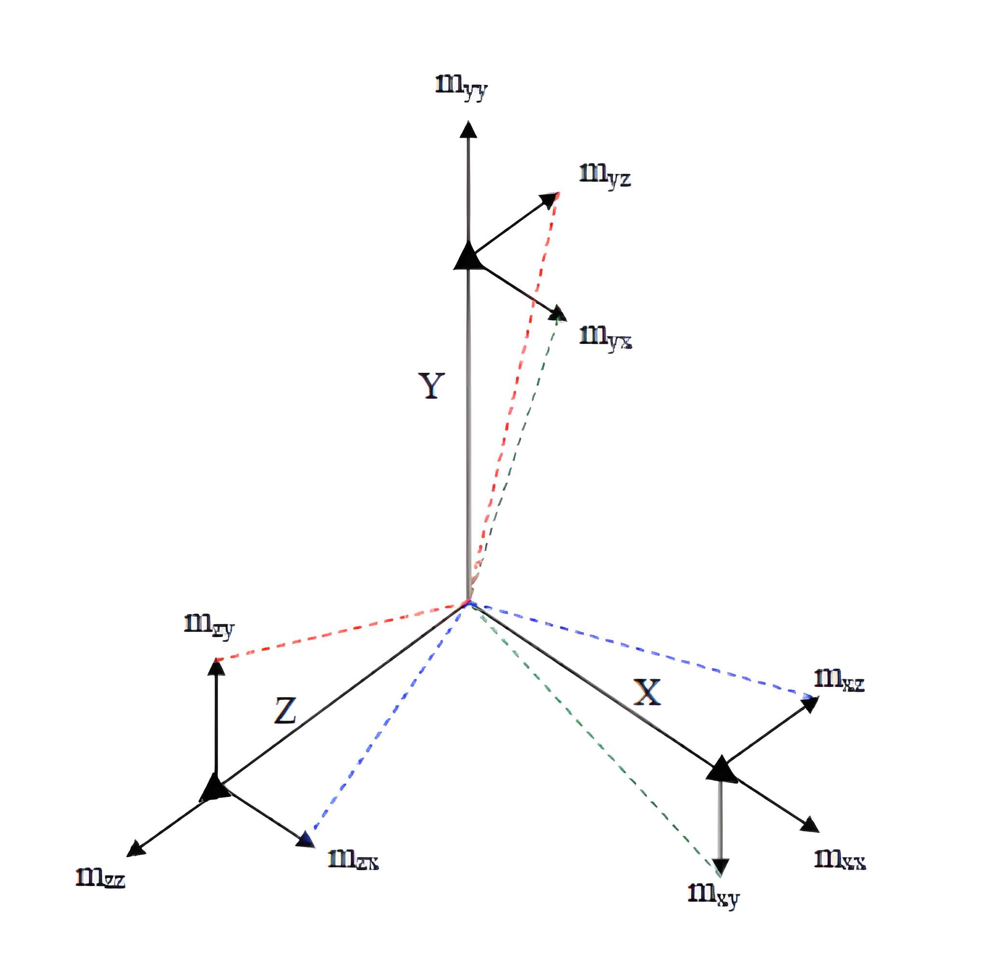

<!DOCTYPE html>


<html lang="zh-CN">
  

    <head>
      <meta charset="utf-8" />
        
      <meta name="description" content="脑海中起毛球的记忆" />
      
      <meta
        name="viewport"
        content="width=device-width, initial-scale=1, maximum-scale=1"
      />
      <title>IMU校准(1)-误差源 |  Wh&#39;s 🛰️ Blogs</title>
  <meta name="generator" content="hexo-theme-ayer">
      
      <link rel="shortcut icon" href="/img/avatar/Jr.ico" />
       
<link rel="stylesheet" href="../../dist/main.css">

      
<link rel="stylesheet" href="../../css/fonts/remixicon.css">

      
<link rel="stylesheet" href="../../css/custom.css">
 
      <script src="https://cdn.staticfile.org/pace/1.2.4/pace.min.js"></script>
       
 

      <link
        rel="stylesheet"
        href="https://cdn.jsdelivr.net/npm/@sweetalert2/theme-bulma@5.0.1/bulma.min.css"
      />
      <script src="https://cdn.jsdelivr.net/npm/sweetalert2@11.0.19/dist/sweetalert2.min.js"></script>

      <!-- mermaid -->
      
      <style>
        .swal2-styled.swal2-confirm {
          font-size: 1.6rem;
        }
      </style>
    </head>
  </html>
</html>


<body>
  <div id="app">
    
      
    <main class="content on">
      <section class="outer">
  <article
  id="mems-IMU校准-误差源"
  class="article article-type-mems"
  itemscope
  itemprop="blogPost"
  data-scroll-reveal
>
  <div class="article-inner">
    
    <header class="article-header">
       
<h1 class="article-title sea-center" style="border-left:0" itemprop="name">
  IMU校准(1)-误差源
</h1>
 

      
    </header>
     
    <div class="article-meta">
      <a href="" class="article-date">
  <time datetime="2023-09-22T02:58:22.000Z" itemprop="datePublished">2023-09-22</time>
</a>   
<div class="word_count">
    <span class="post-time">
        <span class="post-meta-item-icon">
            <i class="ri-quill-pen-line"></i>
            <span class="post-meta-item-text"> 字数统计:</span>
            <span class="post-count">2.8k</span>
        </span>
    </span>

    <span class="post-time">
        &nbsp; | &nbsp;
        <span class="post-meta-item-icon">
            <i class="ri-book-open-line"></i>
            <span class="post-meta-item-text"> 阅读时长≈</span>
            <span class="post-count">10 分钟</span>
        </span>
    </span>
</div>
 
    </div>
      
    <div class="tocbot"></div>


  
    <div class="article-entry" itemprop="articleBody">
       
  <h2 id="引言">引言</h2>
<p>IMU（Inertial Measurement Unit）是一种广泛应用于导航、机器人、飞行器和虚拟现实等领域的传感器装置，它可以测量并记录物体的加速度和角速度。但是其测量结果具有噪声和不精确性，这些误差源可能会导致导航或测量的不准确性。为了解决IMU的误差问题，校准是必不可少的步骤。校准是一个复杂的过程，旨在减少系统误差、随机误差和温度效应等因素的影响。在本博客中，我们将深入探讨IMU校准的误差源，以及如何通过校准方法来提高IMU的精度和性能。本系列博客为IMU校准相关工作的总结和记录，包含原理和MATLAB代码。</p>
<span id="more"></span>
<h2 id="IMU误差">IMU误差</h2>
<p>常见的IMU器件按照其组成模块分为6轴IMU、9轴IMU。9轴传感器包括：三轴加速度计(Tri-Axial Accelerometer)、三轴陀螺仪(Tri-Axial Gyroscope)和三轴磁力计(Tri-Axial Magnetometer )。9轴IMU的能测量载体线性加速度、角速度和方向（包括方向相对于地磁场）。6轴传感器包括：三轴加速度计(Tri-Axial Accelerometer)、三轴陀螺仪(Tri-Axial Gyroscope)，它们用于测量物体的线性加速度和角速度。本文所使用的传感器为ICM20948模组<a target="_blank" rel="noopener" href="https://www.digikey.com/en/product-highlight/i/invensense/icm-20948-9-axis-motion-tracking-device">ICM-20948 Tracking Device - InvenSense | DigiKey</a>。且暂时只对加速度计和陀螺仪进行校准，两者的误差源基本一致。</p>
<p></p>
<p>按照误差特性，其误差分为确定性误差（deterministic errors）、随机误差（stochastic errors）两部分并进行研究讨论。</p>
<p></p>
<h2 id="确定性误差">确定性误差</h2>
<h3 id="零偏">零偏</h3>
<p>零偏误差（Offset ），也称为偏置误差或静态误差，是传感器测量结果与实际值之间的差异。零偏误差表示了传感器在零输入条件下的输出值与零点（或标定点）之间的差异。</p>
<p>具体来说，如果一个传感器在没有外部刺激或输入信号的情况下，输出值不为零，那么这个输出值与零点之间的差异就是零偏误差。零偏误差可能由多种因素引起，包括传感器本身的制造偏差、环境条件的变化、温度变化以及电子噪声等。</p>
<p>零偏误差通常以传感器输出值的百分比或固定数值来表示。例如，如果一个温度传感器在零摄氏度时输出值为1摄氏度，那么它的零偏误差就是1度。如果在零摄氏度时输出值为0.5摄氏度，那么零偏误差通常以百分比表示，例如零偏误差为±0.5%。陀螺仪/加速度计的零偏是在与输入加速度或旋转无关的特定操作条件下测量的一段时间内的平均值。陀螺仪的零偏单位为(°/h)或者(rad/s)，加速度的零偏单位为(m²/s)或(g)(重力加速值)。</p>
<p>零偏误差包括固定项、温度引起的变化、开关变化和运行中的变化。零篇中的固定项和温度引起的变化可以通过实验室校准测试来估计。</p>
<h3 id="标度-比例-因子">标度(比例)因子</h3>
<p>标定因子(Scale ratio)指的是将传感器的数字输出转换为实际物理量的比例。标定因子对于相同传感器的不同情况是不同的，而制造商仅提供默认的标称标定因子。标定因子的大小用百万分之一( ppm )或百分数表示。标度因子误差包括固定项、温度引起的变化、不对称性和非线性误差部分。标度因子误差的主要部分是固定项和温度引起的变化。与零偏类似，可以通过实验室校准测试来估计标度因子误差，并且估计的误差参数构成误差补偿或校准算法的输入。</p>
<h3 id="轴未对准">轴未对准</h3>
<p>理想情况下，三轴传感器各轴严格正交，即任何一轴均不会感应到另外两个轴的分量。由于传感器设备装配精度等原因，实际情况存在的三轴非正交误差，即任何轴上的任何运动都会导致其他轴发生变化，具体取决于未对准的大小。并且这种非正交性会对测量产生尺度因子效应。其单位是毫弧(mili-radian)。非正交性会对测量产生缩放因子影响。任何轴上的任何移动都会导致其他轴上的变化，这取决于未对准的大小。</p>
<p>下图为三种确定性误差项示意图，来源[1]。</p>
<p></p>
<p>[1] <a target="_blank" rel="noopener" href="https://www.semanticscholar.org/paper/A-method-of-low-cost-IMU-calibration-and-alignment-Lv-Ravankar/9f5c1ac90830fee28259acd7f2b1e456d7f58c51">A method of low-cost IMU calibration and alignment | Semantic Scholar</a></p>
<h2 id="随机误差">随机误差</h2>
<p>随机误差是由于偏差或标度因子随时间的随机变化和传感器噪声。零偏和标度因子的随机变化是随机误差的低频分量。传感器噪声是随机误差的高频分量。随机误差最重要的特征是输入和输出之间可能没有任何直接关系。随机误差的来源是电子器件中的闪烁噪声和对信号的干扰效应。其中零偏和标度因子随着时间随机变化的过程分别定义为零偏不稳定性（漂移）和尺度因子不稳定性（漂移）。</p>
<h3 id="零偏不稳定性">零偏不稳定性</h3>
<p>零偏不稳定性(Bias Instability (Bias Drift))是指，零偏并不是一个固定值，运行过程中零偏会随时间变换。换句话说，零偏不稳定性表示零偏随时间变化。零偏不稳定性可以通过Allan方差和自相关分析来表征，并使用这些测试和分析的结果来建模。随机误差建模采用随机游动模型、高斯-马尔可夫模型、随机常数模型和自回归模型等多种方法（随机过程）。一阶高斯-马尔可夫模型是针对零偏不稳定性的最合适的随机过程。</p>
<h3 id="比例因子不稳定性">比例因子不稳定性</h3>
<p>比例因子不稳定性（Scale Factor Instability (Scale Factor Drift)）表示比例因子随时间变化的量。比例因子不稳定性表征试验不同于偏置不稳定性表征测试方法。尺度因子不稳定性的表征需要长期的动态速率测试，尺度因子不稳定的影响不是很明显，而且可以忽略不计。</p>
<h3 id="传感器噪声">传感器噪声</h3>
<p>传感器噪声是随机误差的高频分量。通过滤波可以减少传感器噪声的影响。根据传感器的噪声带宽和噪声功率设计了低通滤波器。随机传感器噪声在IMU误差模型中被建模为零均值白化噪声。随机传感器噪声密度的单位为 $deg/h / \sqrt{Hz}$ 或 $deg/s / \sqrt{Hz}$，随机噪声密度用1δ值表示。</p>
<p>上述的确定性误差和随机误差项针对加速度计和陀螺仪误差分析皆适用。IMU噪声中，确定性误差可以通过补偿消除，随机误差只能减小不能完全消除。</p>
<h2 id="IMU误差模型">IMU误差模型</h2>
<p>IMU系统需要在xyz三个方向上测量加速度和角速率，以计算姿态、位置和速度。因此，IMU包含三个加速度计和三个陀螺仪。根据前面对IMU误差源的分析，现在分别建立三轴加速度计和陀螺仪的误差模型。</p>
<p><strong>加速度计误差模型</strong></p>
<p>单轴加速度计误差模型：<br>
$$<br>
\tilde{a_x}=(1+S_x+\delta S_x)a_x+B_x+\delta B_x+n_x<br>
$$<br>
其中：</p>
<ul>
<li>$ \tilde{a_x} $ ：加速计测量值；</li>
<li>$  {a_x} $ ：真实加速度值；</li>
<li>$S_x$ ：比例因子误差；</li>
<li>$\delta S_x$：比例因子不稳定性误差；</li>
<li>$B_x$：零偏误差值；</li>
<li>$\delta B_x$ ：零偏误差不稳定性值；</li>
<li>$n_x$：传感器噪声；</li>
</ul>
<p>三轴加速度计误差模型用矩阵形式表示为：</p>
<p>$$<br>
\begin{aligned}<br>
\begin{bmatrix}<br>
\tilde{a_x} \\<br>
\tilde{a_y} \\<br>
\tilde{a_z}<br>
\end{bmatrix}=<br>
\begin{bmatrix}<br>
1+S_x+\delta S_x &amp; M_{xy}&amp;M_{xz} \\<br>
M_{yx}&amp;1+S_y+\delta S_y&amp;M_{yz}\\<br>
M_{zx}&amp;M_{zy}&amp;1+\mathrm{S}_y+\delta\mathrm{S}_y<br>
\end{bmatrix}<br>
\begin{bmatrix}<br>
a_x \\<br>
a_y \\<br>
a_z<br>
\end{bmatrix}+<br>
\begin{bmatrix}B_x+\delta B_x \\<br>
B_y+\delta B_y \\<br>
B_z+\delta B_z<br>
\end{bmatrix}+<br>
\begin{bmatrix}<br>
n_x \\<br>
n_y \\<br>
n_z<br>
\end{bmatrix}<br>
\end{aligned}<br>
$$</p>
<p>其中：</p>
<p>$M_{xy},M_{xz},M_{yx},M_{yz},M_{zx},M_{zy}$ 表示轴为对准，$M_{xy}$ 表示三轴加速度计坐标x轴绕正交坐标系y轴旋转的角度。</p>

<p><strong>陀螺仪计误差模型</strong></p>
<p>类似于加速度计误差模型，陀螺仪受加速度计的影响，还存在一个与加速度相关的误差项。</p>
<p>陀螺仪单轴误差模型表示为：<br>
$$<br>
\tilde{w_x}=(1+S_x+\delta S_x)w_x+B_x+\delta B_x+B_{Gx}a_x+n_x<br>
$$<br>
其中：</p>
<ul>
<li>$\tilde{w_x}$ ：陀螺仪输出值；</li>
<li>${w_x}$：真实角速度；</li>
<li>$S_x$ ：比例因子误差；</li>
<li>$\delta S_x$：比例因子不稳定性误差；</li>
<li>$B_x$：零偏误差值；</li>
<li>$\delta B_x$ ：零偏误差不稳定性值；</li>
<li>$B_{Gx}$：与加速度有关误差项系数；</li>
<li>$n_x$：传感器噪声；</li>
</ul>
<p>三轴陀螺仪误差模型用矩阵表示如下：<br>
$$<br>
\begin{bmatrix}<br>
\tilde{w_{x}} \\<br>
\tilde{w_{y}} \\<br>
\tilde{w_{z}}<br>
\end{bmatrix}=<br>
\begin{bmatrix}<br>
1+S_{x}+\delta S_{x}&amp;M_{xy}&amp;M_{xz}\\<br>
M_{yx}&amp;1+S_{y}+\delta S_{y}&amp;M_{yz}\\<br>
M_{zx}&amp;M_{zy}&amp;1+S_{y}+\delta S_{y}<br>
\end{bmatrix}<br>
\begin{bmatrix}<br>
w_{x}\\<br>
w_{y}\\<br>
w_{z}<br>
\end{bmatrix}+<br>
\begin{bmatrix}B_{x}+\delta B_{x}<br>
\\B_{y}+\delta B_{y} \\<br>
B_{z}+\delta B_{z}\end{bmatrix}+\begin{bmatrix}B_{gx}&amp;0&amp;0\\<br>
0&amp;B_{gy}&amp;0\\<br>
0&amp;0&amp;B_{gz}\end{bmatrix}<br>
\begin{bmatrix}a_{x}\\<br>
a_{y}\\<br>
a_{z}\end{bmatrix}+\begin{bmatrix}n_{x}<br>
\\n_{y}\\<br>
n_{z}\end{bmatrix}<br>
$$<br>
[2] <a target="_blank" rel="noopener" href="https://ieeexplore.ieee.org/document/6236828">Estimation of deterministic and stochastic IMU error parameters | IEEE Conference Publication | IEEE Xplore</a></p>
<h2 id="简化IMU误差模型">简化IMU误差模型</h2>
<p>由于轴未对准和三轴非正交导致加速度计坐标系(AF accelerometer frame)和陀螺仪坐标系(GF gyroscopes frame)是非正交的，需要分别定义加速度计和陀螺仪的<code>理想坐标系</code>，AOF,GOF。</p>
<p>①AOF的x轴和AF的x轴重合；AOF 的 y 轴位于 AF 的 x 和 y 轴所组成的平面内。陀螺仪的坐标系定义也如此。</p>
<p></p>
<p>传感器（加速度计、陀螺仪）坐标系非正交三轴$(F_x,F_y,F_z)$ 和理想坐标系三轴$(OF_x,OF_y,OF_z)$示意图。</p>
<p>②忽略零偏不稳定性和比例因子不稳定性（将其作为传感器噪声的一部分考虑）；</p>
<p>③陀螺仪忽略与重力相关的误差项；</p>
<p>由①②③则三轴加速度计和三轴陀螺仪误差模型可表示为：<br>
$$<br>
a^O = T^aK^a(a^S + b^a + v^a )<br>
$$<br>
上式中$a^O$，$a^S$, $v^a$ 分表为三轴加速度计测量值，三轴加速度真实值，传感器噪声。<br>
$$<br>
K^a = \begin{bmatrix}<br>
s_{a}^{x} &amp; 0 &amp; 0 \\<br>
0 &amp; s_{a}^{y} &amp; 0 \\<br>
0 &amp; 0 &amp; s_{a}^{z}<br>
\end{bmatrix}<br>
T^a = \begin{bmatrix}<br>
1 &amp; -\beta_{yz} &amp; \beta_{zy} \\<br>
0 &amp; 1 &amp; -\beta_{zx} \\<br>
0 &amp; 0 &amp; 1<br>
\end{bmatrix}<br>
b^a = \begin{bmatrix}<br>
b_{a}^{x}\\<br>
b_{a}^{y}\\<br>
b_{a}^{z}<br>
\end{bmatrix}<br>
$$<br>
$K^a ,T^a,b^a$ 分别表示比例因子误差矩阵、轴未对准误差矩阵、零偏矩阵。</p>
<p>其中$\beta_{ij}$ 具体表示为：</p>
<p></p>
<p>同理三轴陀螺仪表示为：<br>
$$<br>
g^O = T^gK^g(g^S + b^g + v^g )<br>
$$</p>
<p>[3] <a target="_blank" rel="noopener" href="https://www.diag.uniroma1.it/~pretto/papers/tpm_icra2014.pdf">A Robust and Easy to Implement Method for IMU Calibration withoutExternal Equipments</a></p>
 
      <!-- reward -->
      
    </div>
    

    <!-- copyright -->
    
    <div class="declare">
      <ul class="post-copyright">
        <li>
          <i class="ri-copyright-line"></i>
          <strong>版权声明： </strong>
          
          本博客所有文章除特别声明外，著作权归作者所有。转载请注明出处！
          
        </li>
      </ul>
    </div>
    
    <footer class="article-footer">
       
<div class="share-btn">
      <span class="share-sns share-outer">
        <i class="ri-share-forward-line"></i>
        分享
      </span>
      <div class="share-wrap">
        <i class="arrow"></i>
        <div class="share-icons">
          
          <a class="weibo share-sns" href="javascript:;" data-type="weibo">
            <i class="ri-weibo-fill"></i>
          </a>
          <a class="weixin share-sns wxFab" href="javascript:;" data-type="weixin">
            <i class="ri-wechat-fill"></i>
          </a>
          <a class="qq share-sns" href="javascript:;" data-type="qq">
            <i class="ri-qq-fill"></i>
          </a>
          <a class="douban share-sns" href="javascript:;" data-type="douban">
            <i class="ri-douban-line"></i>
          </a>
          <!-- <a class="qzone share-sns" href="javascript:;" data-type="qzone">
            <i class="icon icon-qzone"></i>
          </a> -->
          
          <a class="facebook share-sns" href="javascript:;" data-type="facebook">
            <i class="ri-facebook-circle-fill"></i>
          </a>
          <a class="twitter share-sns" href="javascript:;" data-type="twitter">
            <i class="ri-twitter-fill"></i>
          </a>
          <a class="google share-sns" href="javascript:;" data-type="google">
            <i class="ri-google-fill"></i>
          </a>
        </div>
      </div>
</div>

<div class="wx-share-modal">
    <a class="modal-close" href="javascript:;"><i class="ri-close-circle-line"></i></a>
    <p>扫一扫，分享到微信</p>
    <div class="wx-qrcode">
      
    </div>
</div>

<div id="share-mask"></div>  
    </footer>
  </div>

   
  <nav class="article-nav">
    
      <a href="../%E7%89%9B%E9%A1%BF%E6%B3%95/" class="article-nav-link">
        <strong class="article-nav-caption">上一篇</strong>
        <div class="article-nav-title">
          
            牛顿、高斯牛顿、LM方法
          
        </div>
      </a>
    
    
      <a href="../Kalman/" class="article-nav-link">
        <strong class="article-nav-caption">下一篇</strong>
        <div class="article-nav-title">Kalman</div>
      </a>
    
  </nav>

  
   
  
   
    <script src="https://cdn.staticfile.org/twikoo/1.4.18/twikoo.all.min.js"></script>
    <div id="twikoo" class="twikoo"></div>
    <script>
        twikoo.init({
            envId: ""
        })
    </script>
 
</article>

</section>
      <footer class="footer">
  <div class="outer">
    <ul>
      <li>
        Copyrights &copy;
        2020-2023
        <i class="ri-heart-fill heart_icon"></i> Wh
      </li>
    </ul>
    <ul>
      <li>
        
      </li>
    </ul>
    <ul>
      <li>
        
        
        <span>
  <span><i class="ri-user-3-fill"></i>访问人数:<span id="busuanzi_value_site_uv"></span></span>
  <span class="division">|</span>
  <span><i class="ri-eye-fill"></i>浏览次数:<span id="busuanzi_value_page_pv"></span></span>
</span>
        
      </li>
    </ul>
    <ul>
      
    </ul>
    <ul>
      
    </ul>
    <ul>
      <li>
        <!-- cnzz统计 -->
        
      </li>
    </ul>
  </div>
</footer>    
    </main>
    <div class="float_btns">
      <div class="totop" id="totop">
  <i class="ri-arrow-up-line"></i>
</div>

<div class="todark" id="todark">
  <i class="ri-moon-line"></i>
</div>

    </div>
    <aside class="sidebar on">
      <button class="navbar-toggle"></button>
<nav class="navbar">
  
  <div class="logo">
    <a href="../../index.html"></a>
  </div>
  
  <ul class="nav nav-main">
    
    <li class="nav-item">
      <a class="nav-item-link" href="../../index.html">主页</a>
    </li>
    
    <li class="nav-item">
      <a class="nav-item-link" href="../../archives">归档</a>
    </li>
    
    <li class="nav-item">
      <a class="nav-item-link" href="../../categories">分类</a>
    </li>
    
    <li class="nav-item">
      <a class="nav-item-link" href="../../tags">标签</a>
    </li>
    
    <li class="nav-item">
      <a class="nav-item-link" href="../../about">关于我</a>
    </li>
    
  </ul>
</nav>
<nav class="navbar navbar-bottom">
  <ul class="nav">
    <li class="nav-item">
      
      <a class="nav-item-link nav-item-search"  title="搜索">
        <i class="ri-search-line"></i>
      </a>
      
      
    </li>
  </ul>
</nav>
<div class="search-form-wrap">
  <div class="local-search local-search-plugin">
  <input type="search" id="local-search-input" class="local-search-input" placeholder="Search...">
  <div id="local-search-result" class="local-search-result"></div>
</div>
</div>
    </aside>
    <div id="mask"></div>

<!-- #reward -->
<div id="reward">
  <span class="close"><i class="ri-close-line"></i></span>
  <p class="reward-p"><i class="ri-cup-line"></i>请我喝杯咖啡吧~</p>
  <div class="reward-box">
    
    <div class="reward-item">
      
      <span class="reward-type">支付宝</span>
    </div>
    
    
    <div class="reward-item">
      
      <span class="reward-type">微信</span>
    </div>
    
  </div>
</div>
    
<script src="../../js/jquery-3.6.0.min.js"></script>
 
<script src="../../js/lazyload.min.js"></script>

<!-- Tocbot -->
 
<script src="../../js/tocbot.min.js"></script>

<script>
  tocbot.init({
    tocSelector: ".tocbot",
    contentSelector: ".article-entry",
    headingSelector: "h1, h2, h3, h4, h5, h6",
    hasInnerContainers: true,
    scrollSmooth: true,
    scrollContainer: "main",
    positionFixedSelector: ".tocbot",
    positionFixedClass: "is-position-fixed",
    fixedSidebarOffset: "auto",
  });
</script>

<script src="https://cdn.staticfile.org/jquery-modal/0.9.2/jquery.modal.min.js"></script>
<link
  rel="stylesheet"
  href="https://cdn.staticfile.org/jquery-modal/0.9.2/jquery.modal.min.css"
/>
<script src="https://cdn.staticfile.org/justifiedGallery/3.8.1/js/jquery.justifiedGallery.min.js"></script>

<script src="../../dist/main.js"></script>

<!-- ImageViewer -->
 <!-- Root element of PhotoSwipe. Must have class pswp. -->
<div class="pswp" tabindex="-1" role="dialog" aria-hidden="true">

    <!-- Background of PhotoSwipe. 
         It's a separate element as animating opacity is faster than rgba(). -->
    <div class="pswp__bg"></div>

    <!-- Slides wrapper with overflow:hidden. -->
    <div class="pswp__scroll-wrap">

        <!-- Container that holds slides. 
            PhotoSwipe keeps only 3 of them in the DOM to save memory.
            Don't modify these 3 pswp__item elements, data is added later on. -->
        <div class="pswp__container">
            <div class="pswp__item"></div>
            <div class="pswp__item"></div>
            <div class="pswp__item"></div>
        </div>

        <!-- Default (PhotoSwipeUI_Default) interface on top of sliding area. Can be changed. -->
        <div class="pswp__ui pswp__ui--hidden">

            <div class="pswp__top-bar">

                <!--  Controls are self-explanatory. Order can be changed. -->

                <div class="pswp__counter"></div>

                <button class="pswp__button pswp__button--close" title="Close (Esc)"></button>

                <button class="pswp__button pswp__button--share" style="display:none" title="Share"></button>

                <button class="pswp__button pswp__button--fs" title="Toggle fullscreen"></button>

                <button class="pswp__button pswp__button--zoom" title="Zoom in/out"></button>

                <!-- Preloader demo http://codepen.io/dimsemenov/pen/yyBWoR -->
                <!-- element will get class pswp__preloader--active when preloader is running -->
                <div class="pswp__preloader">
                    <div class="pswp__preloader__icn">
                        <div class="pswp__preloader__cut">
                            <div class="pswp__preloader__donut"></div>
                        </div>
                    </div>
                </div>
            </div>

            <div class="pswp__share-modal pswp__share-modal--hidden pswp__single-tap">
                <div class="pswp__share-tooltip"></div>
            </div>

            <button class="pswp__button pswp__button--arrow--left" title="Previous (arrow left)">
            </button>

            <button class="pswp__button pswp__button--arrow--right" title="Next (arrow right)">
            </button>

            <div class="pswp__caption">
                <div class="pswp__caption__center"></div>
            </div>

        </div>

    </div>

</div>

<link rel="stylesheet" href="https://cdn.staticfile.org/photoswipe/4.1.3/photoswipe.min.css">
<link rel="stylesheet" href="https://cdn.staticfile.org/photoswipe/4.1.3/default-skin/default-skin.min.css">
<script src="https://cdn.staticfile.org/photoswipe/4.1.3/photoswipe.min.js"></script>
<script src="https://cdn.staticfile.org/photoswipe/4.1.3/photoswipe-ui-default.min.js"></script>

<script>
    function viewer_init() {
        let pswpElement = document.querySelectorAll('.pswp')[0];
        let $imgArr = document.querySelectorAll(('.article-entry img:not(.reward-img)'))

        $imgArr.forEach(($em, i) => {
            $em.onclick = () => {
                // slider展开状态
                // todo: 这样不好，后面改成状态
                if (document.querySelector('.left-col.show')) return
                let items = []
                $imgArr.forEach(($em2, i2) => {
                    let img = $em2.getAttribute('data-idx', i2)
                    let src = $em2.getAttribute('data-target') || $em2.getAttribute('src')
                    let title = $em2.getAttribute('alt')
                    // 获得原图尺寸
                    const image = new Image()
                    image.src = src
                    items.push({
                        src: src,
                        w: image.width || $em2.width,
                        h: image.height || $em2.height,
                        title: title
                    })
                })
                var gallery = new PhotoSwipe(pswpElement, PhotoSwipeUI_Default, items, {
                    index: parseInt(i)
                });
                gallery.init()
            }
        })
    }
    viewer_init()
</script> 
<!-- MathJax -->
 <script type="text/x-mathjax-config">
  MathJax.Hub.Config({
      tex2jax: {
          inlineMath: [ ['$','$'], ["\\(","\\)"]  ],
          processEscapes: true,
          skipTags: ['script', 'noscript', 'style', 'textarea', 'pre', 'code']
      }
  });

  MathJax.Hub.Queue(function() {
      var all = MathJax.Hub.getAllJax(), i;
      for(i=0; i < all.length; i += 1) {
          all[i].SourceElement().parentNode.className += ' has-jax';
      }
  });
</script>

<script src="https://cdn.staticfile.org/mathjax/2.7.7/MathJax.js"></script>
<script src="https://cdn.staticfile.org/mathjax/2.7.7/config/TeX-AMS-MML_HTMLorMML-full.js"></script>
<script>
  var ayerConfig = {
    mathjax: true,
  };
</script>

<!-- Katex -->

<!-- busuanzi  -->
 
<script src="../../js/busuanzi-2.3.pure.min.js"></script>
 
<!-- ClickLove -->

<!-- ClickBoom1 -->

<!-- ClickBoom2 -->

<!-- CodeCopy -->
 
<link rel="stylesheet" href="../../css/clipboard.css">
 <script src="https://cdn.staticfile.org/clipboard.js/2.0.10/clipboard.min.js"></script>
<script>
  function wait(callback, seconds) {
    var timelag = null;
    timelag = window.setTimeout(callback, seconds);
  }
  !function (e, t, a) {
    var initCopyCode = function(){
      var copyHtml = '';
      copyHtml += '<button class="btn-copy" data-clipboard-snippet="">';
      copyHtml += '<i class="ri-file-copy-2-line"></i><span>COPY</span>';
      copyHtml += '</button>';
      $(".highlight .code pre").before(copyHtml);
      $(".article pre code").before(copyHtml);
      var clipboard = new ClipboardJS('.btn-copy', {
        target: function(trigger) {
          return trigger.nextElementSibling;
        }
      });
      clipboard.on('success', function(e) {
        let $btn = $(e.trigger);
        $btn.addClass('copied');
        let $icon = $($btn.find('i'));
        $icon.removeClass('ri-file-copy-2-line');
        $icon.addClass('ri-checkbox-circle-line');
        let $span = $($btn.find('span'));
        $span[0].innerText = 'COPIED';
        
        wait(function () { // 等待两秒钟后恢复
          $icon.removeClass('ri-checkbox-circle-line');
          $icon.addClass('ri-file-copy-2-line');
          $span[0].innerText = 'COPY';
        }, 2000);
      });
      clipboard.on('error', function(e) {
        e.clearSelection();
        let $btn = $(e.trigger);
        $btn.addClass('copy-failed');
        let $icon = $($btn.find('i'));
        $icon.removeClass('ri-file-copy-2-line');
        $icon.addClass('ri-time-line');
        let $span = $($btn.find('span'));
        $span[0].innerText = 'COPY FAILED';
        
        wait(function () { // 等待两秒钟后恢复
          $icon.removeClass('ri-time-line');
          $icon.addClass('ri-file-copy-2-line');
          $span[0].innerText = 'COPY';
        }, 2000);
      });
    }
    initCopyCode();
  }(window, document);
</script>
 
<!-- CanvasBackground -->

<script>
  if (window.mermaid) {
    mermaid.initialize({ theme: "forest" });
  }
</script>


    
    

  </div>
<script type="text/x-mathjax-config">
    MathJax.Hub.Config({
        tex2jax: {
            inlineMath: [ ["$","$"], ["\\(","\\)"] ],
            skipTags: ['script', 'noscript', 'style', 'textarea', 'pre', 'code'],
            processEscapes: true
        }
    });
    MathJax.Hub.Queue(function() {
        var all = MathJax.Hub.getAllJax();
        for (var i = 0; i < all.length; ++i)
            all[i].SourceElement().parentNode.className += ' has-jax';
    });
</script>
<script src="http://cdn.mathjax.org/mathjax/latest/MathJax.js?config=TeX-AMS-MML_HTMLorMML"></script>
</body>

</html>